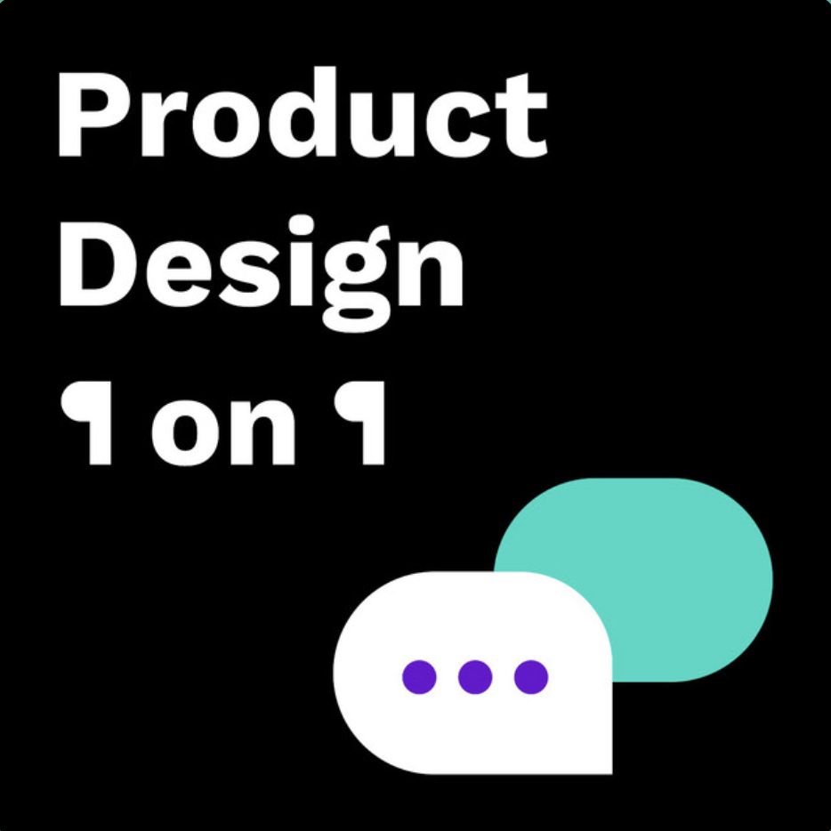
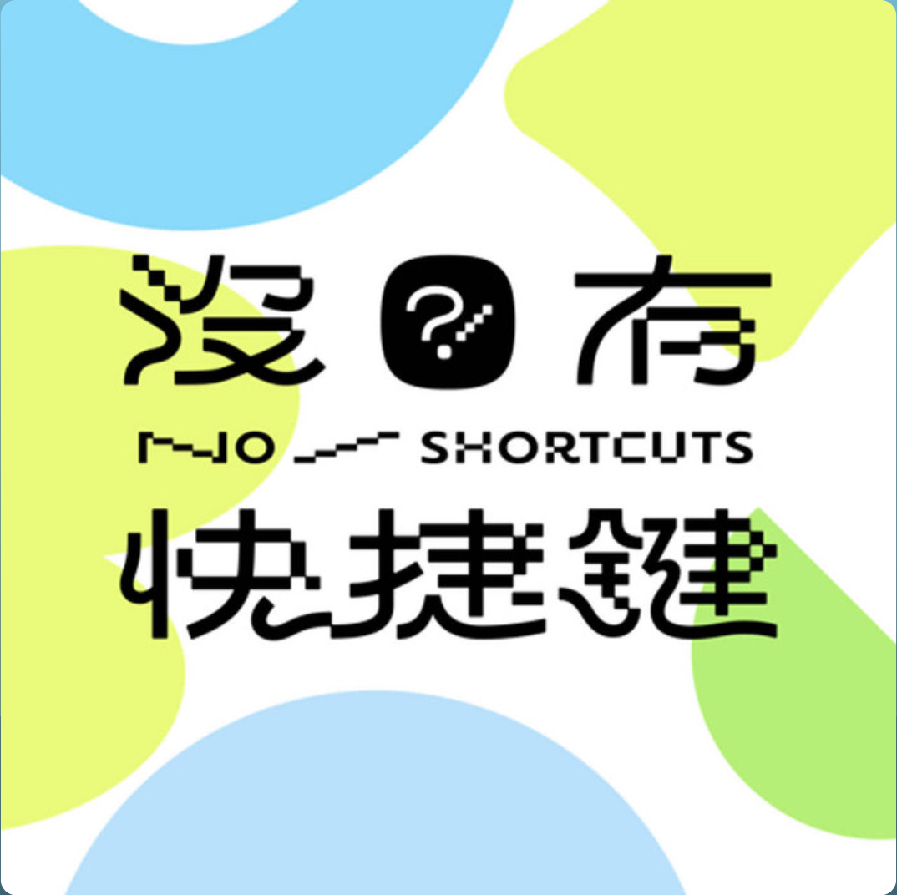
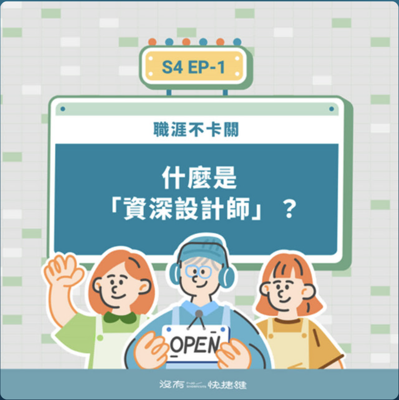
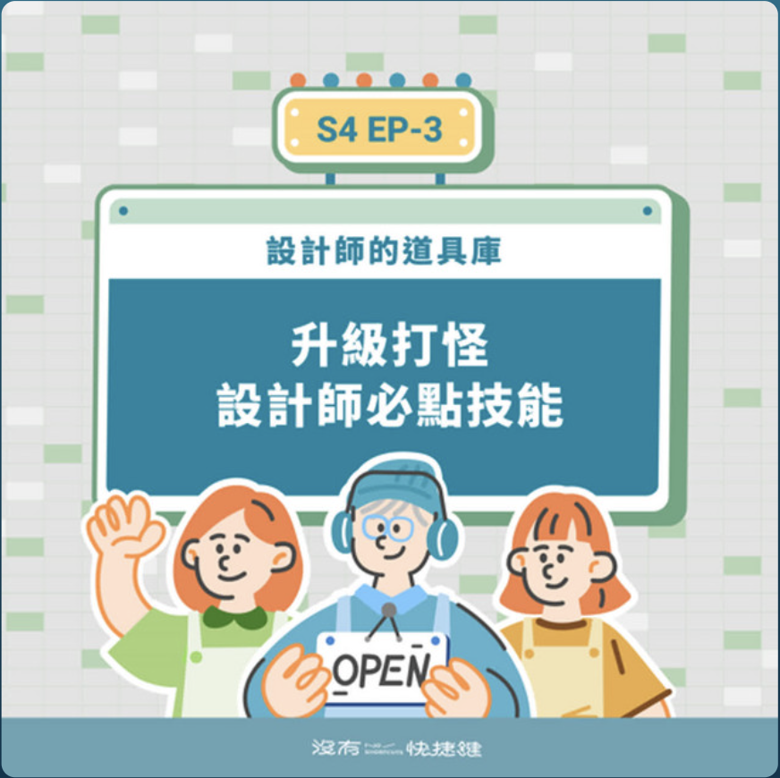
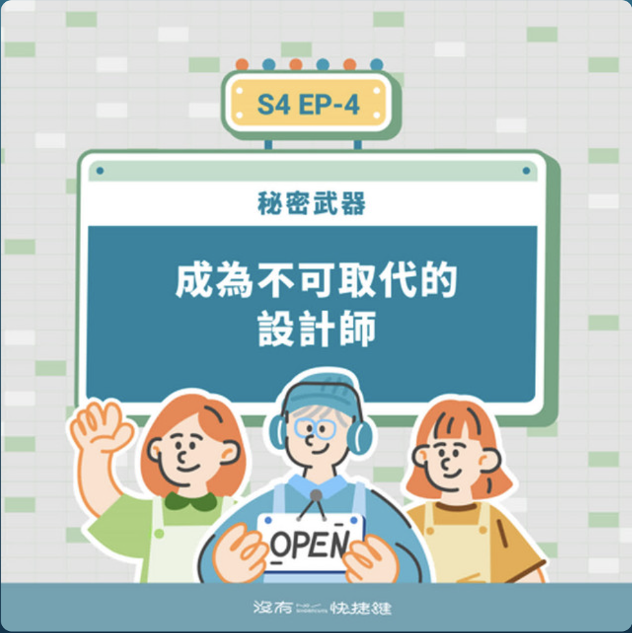
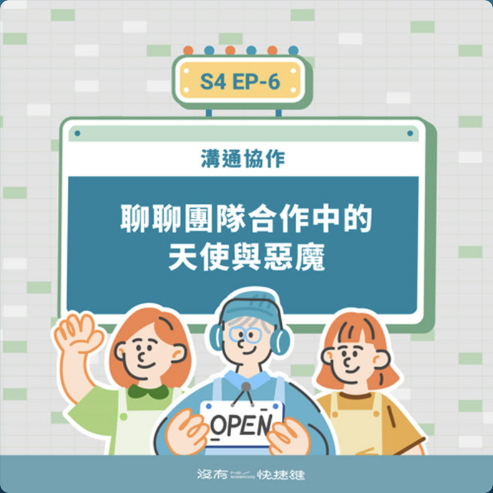
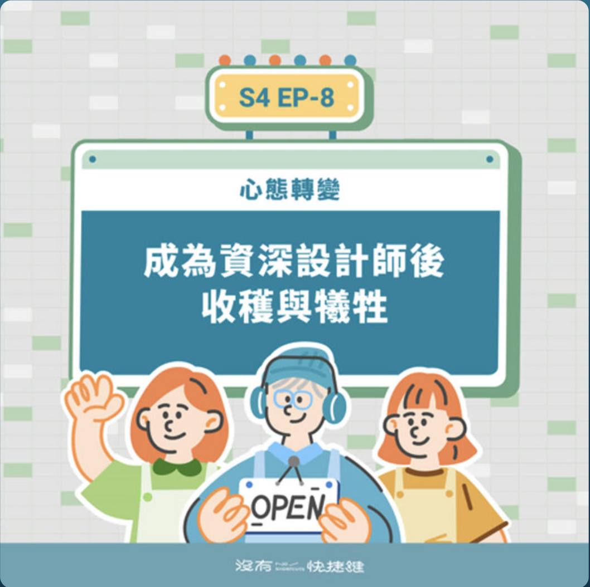
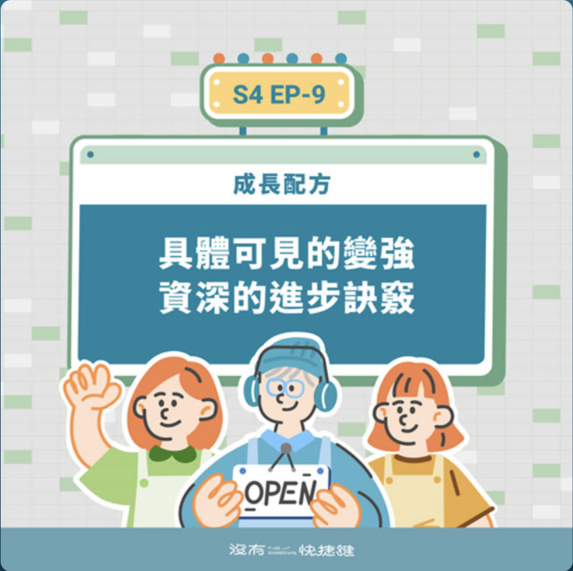
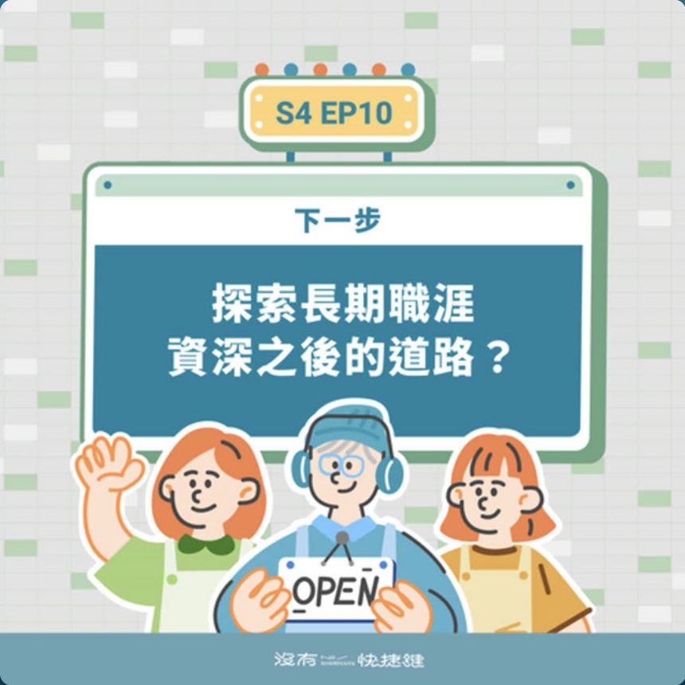

Podcast
我參與的 Podcast




S4EP1 · 怎麼樣才算是「資深」設計師？釐清後讓你的職涯不卡關
↗
S4EP2 · AI 會取代你嗎？如何融入產品設計流程？陪伴你告別價值焦慮的配方
↗

S4EP3 · 掌握成為資深設計師的硬實力 — 揭秘提升設計實力的訓練指南！
↗

S4EP4 · 軟實力是什麼？很少人提過的設計師職場秘密武器
↗

S4EP5 · 資深設計師無所不能？聊聊那些年我們失敗跌倒的慘痛經驗
↗

S4EP6 · 如何攻克職場溝通協作挑戰 — 帶領團隊看到清晰的願景
↗

S4EP7 · 設計師真正的超能力 — 創造價值的關鍵
↗

S4EP8 · 成為資深設計師後的心態轉變與調適
↗

S4EP9 · 想要具體可見的變強？資深工作者沒告訴你的成長配方
↗

S4EP10 · 以終為始的職涯觀——關於資深設計師的下一步
↗